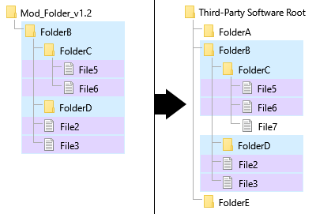

The Mod Packages or simply Packages are the objects that apply the modifications to the third-party software. They are in some way the heart of the modding process and what the Manager is built around.
The purpose of the Mod Package is to provide an easy and standard way to install but also create modifications (Mods) to apply to a third-party software.
Since each (third-party) software have its own file tree and architecture, the Manager canno guess which file must be copied or added where. One solution could be to write, for each package, a kind of script file that tell where to put each file, but for large amount of file this become fastidious for the Mod creator and multply the risk of error.
A good and simple solution allowing to easily adapt genericaly any Mods to any third-party sofrware were found some year ago by other mod managing software. This solution consists on, for the mod creator, to strictly replicate the targeted third-party software's folders tree, in order to allow the mod managing software to perform an automatic comparison, then overwriting or adding each file (or folder) where it is supposed to be within the third-party file tree.
Since a same third-party software have the same file tree every where it is installed, the only thing the mod creator had to do, is to tell people to find the third-party software's installation folder (root of the file tree), then applying mods from there. And this is exactly the way Open Mod Manager works, through its object of Target Location.